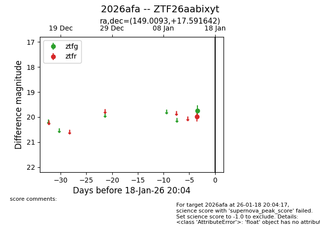
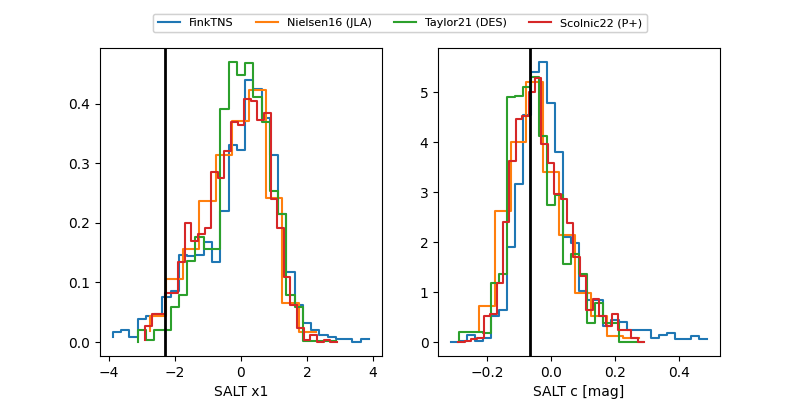

2026afa
Target 2026afa at 2026-01-28 08:41
Aliases and brokers:
FINK: link
Lasair: link
ALeRCE: link
TNS: link
YSE: link
alt names
ZTF26aabixyt (ztf,fink_ztf)
2026afa (tns,yse)
Coordinates:
equatorial (ra, dec) = 149.0093,+17.59164
equatorial (HMS+DMS) = 09:56:02.23,+17:35:29.91
galactic (l, b) = (216.7848,+48.55712)
Flags:
Photometry:
last ztfg=19.55, ztfr=19.58
3 ztfg, 3 ztfr detections
Lightcurve

Visibility


Additional plots
